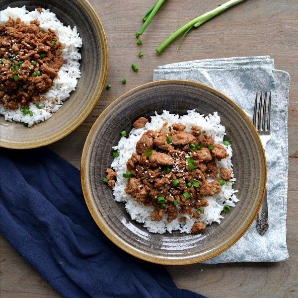

Ground Turkey Rice Bowls Recipe

Ground Turkey Rice Bowls Recipe.
Ingredients
- 1 lb Ground Turkey
- 2 cups uncooked rice
- 1/4 cup Soy Sauce
- 1/4 cup Honey
- 2 tsp Sesame Oil
- 2 cloves minced garlic
- 1/4 tsp ginger
- 1/4 tsp crushed red pepper flakes
- 1/4 tsp ground black pepper
- green onion and sesame seeds for garnish
Steps
- Cook rice according to package directions.
- In a large skillet, over medium heat brown the ground turkey 8-10 minutes until fully cooked.
- While turkey is cooking, make the sauce. Add garlic, honey, soy sauce, sesame oil, ginger, red pepper flakes, and black pepper to a bowl. Mix together.
- Once turkey is fully cooked add the sauce to the skillet. Cook 3-4 minutes until the sauce thickens/absorbs into the turkey
- Serve the turkey over the rice. Garnish with green onions and sesame seeds.
Recipe Source
Go Home